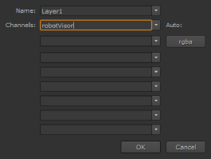

重要的是要理解，许多类型的节点允许您将它们的输出定向到特定的通道和父层。您可以选择在每个后续节点中处理这些通道，或者保持它们不变。
许多节点具有 输出 或 渠道 设置，使您可以将当前节点的输出定向到特定的层和通道。您也可以使用 输出 或 渠道 下拉菜单创建新的层和通道。
某些节点不包括 输出 或 渠道 设置他们的参数。对于这些，您可以连接其他节点，如通道复制或洗牌，以在节点树中创建和管理通道输出。
| 1。 | 打开输出创建新通道的节点的 “属性” 面板。 |
| 2. | 从 输出 或 渠道 下拉菜单，选择 新 . |
| 3. | 下 名称 ,输入层的名称，并在 渠道 新频道名称。 |

注意: 您可以使用新的层名称来创建新层，也可以输入以前创建的层。你不能创造新的渠道进入层内置于 核武器 (如 面具 )。
| 4. | 单击 好 . |
注意: 您还可以使用 Shuffle 和 ShuffleCopy 节点创建新的通道。这些解释后，在 交换通道 .
|
|